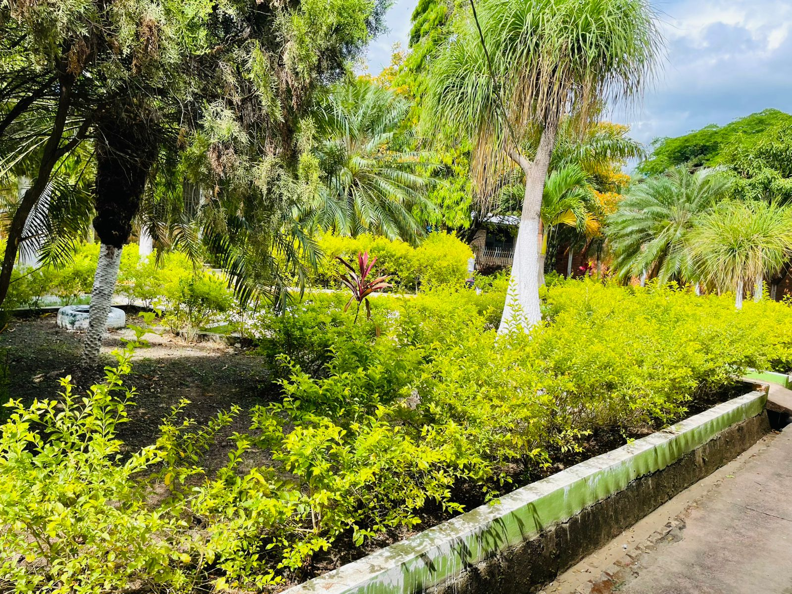

IDO
DANLÍ, El Paraíso. Siempre habrá una nueva página para continuar escribiendo la historia de una institución educativa que con el trascurrir de los años se moderniza y abre nuevas oportunidades para una juventud ávida de conocimientos.

Talleres
El Instituto Departamental de Oriente ofrece talleres para que los alumnos aprendan un oficio aparte de sus estudios.

Carreras
El instituto cuenta con diversas modalidades para que eligas la que mejor se ajuste a ti.